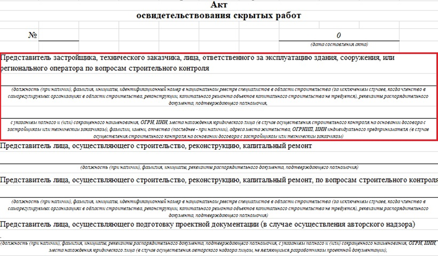

Как происходит строительный контроль со стороны заказчика

На уроке поговорим про ответственность строительного контроля со стороны заказчика, разберем обязанности строительного контроля, а также узнаем об обязательных требованиях к инженеру СК заказчика
Строительный контроль заказчика несет в себе немного другие функции, как и зоны ответственности, поэтому контроль проводится строже.
Инженер назначается на объект приказом, его подпись в АОСР, АООК и специальных актах является одной из главных доказательств, что качество и объем работ подтверждены.

Основные функции строительного контроля подрядчика указаны в Постановлении Правительства РФ от 21.06.2010 года №468 «О порядке проведения строительного контроля при осуществлении строительства, реконструкции и капитального ремонта объектов капитального строительства».
Рассмотрим подробнее:
- Входной контроль. Здесь процесс контроля немного отличается от контроля СК подрядчика - проводится проверка полноты и сроков выполнения входного контроля и достоверности данных;
- Проверка подрядчика на предмет соблюдений правил складирования и хранения продукции и достоверности ведения документов
- Проверка подрядчика при контроле последовательности и состава технологических операций.
- Совместно с подрядчиком освидетельствовать скрытые работы и проводить промежуточную приемку строительных конструкций
- Совместно с подрядчиком проверять законченный строительством объект на соответствие требованиям проектной и рабочей документации, результатам инженерных изысканий и иным требованиям нормативных документов
- Иные мероприятия в целях осуществления строительного контроля, которые предусмотрены законодательством РФ и предусмотренные договором.
Из этого можно сделать вывод, что СК заказчика помимо контроля строительства осуществляет контроль за действиями подрядчика, по сути «контроль над контролем».
Также стоит отметить, что заказчик (застройщик) может привлекать для осуществления строительного контроля подрядную организацию, но одна должна иметь СРО, а инженер – состоять в реестре НОСТРОЙ.
Что такое НОСТРОЙ
НОСТРОЙ – это ассоциация «Национальное объединение строителей», которая ведет реестр специалистов в области строительства.
Для вступления к кандидатам предъявляются следующие требования:
1. Диплом о высшем образовании по специальности или подготовки по направлению в области строительства.
Важно! Не все специальности по направлению принимаются в НОСТРОЙ. В перечнем подходящих можно ознакомиться на официальном ресурсе. Были случаи, когда специалисту отказывали в приеме не смотря на широкий трудовой стаж, когда его специальность не проходила в перечне по требованиям НОСТРОЙ.
2. Наличие стажа на инженерных должностях в области строительства, реконструкции, инженерных изысканий не менее чем три года (раньше было требование 10 лет)
3. Наличие трудового стажа не менее чем пять лет
4. Наличие свидетельства о прохождении независимой оценки квалификации (НОК) физического лица. Необходимо пройти обучение и сдать экзамен с специализированных аккредитованных центрах.
5. Для иностранных граждан – наличие разрешения на работу или патента
6. Отсутствие непогашенной или неснятой судимости.
Это сделано для того, чтобы в реестр были включены специалисты, которые имеют опыт работы в строительстве, понимают практическую структуру и специфику работы, что очень важно для специалиста строительного контроля.
Какую ответственность несет строительный контроль заказчика
Ответственность у СК заказчика гораздо строже, чем у СК подрядчика.
1. Административная ответственность. Самый распространенный вид наказания, применяется к физическим и юридическим лицам. Это могут быть:
- предупреждения;
- штрафы (размер зависит от степени нарушения)
- приостановка строительства
- аннулирование лицензии
- запрет на ведение деятельности
2. Гражданско-правовая ответственность. Наступает в том случае, когда нарушение приводит к материальному ущербу третьим лицам, сторонам договора или окружающей среде. В данном случае это обязанность:
- возместить убытки
- компенсировать переделку или устранить дефекты
- выплатить неустойку за срыв сроков строительства и ввода в эксплуатацию
- компенсировать моральный вред (если доказан)
3. Уголовная ответственность. Самый строгий вид ответственности, применяется в случае наличия строгих нарушений, таких как гибель людей, причинение вреда здоровью или крупного материального ущерба, обрушения зданий или конструкций. Осуществляется на основании решения следственных органов. Возможными последствиями являются:
- лишение свободы
- значительные штрафы
- конфискация имущества
- запрет строительной деятельности.
Поэтому строительный контроль заказчика – должность ответственная, от качества ведения контроля зависит качество и безопасность объекта строительства.